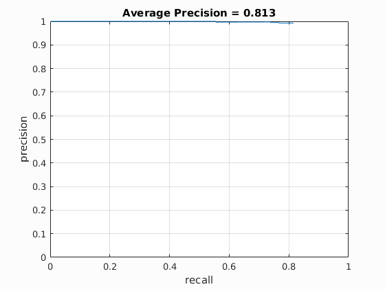
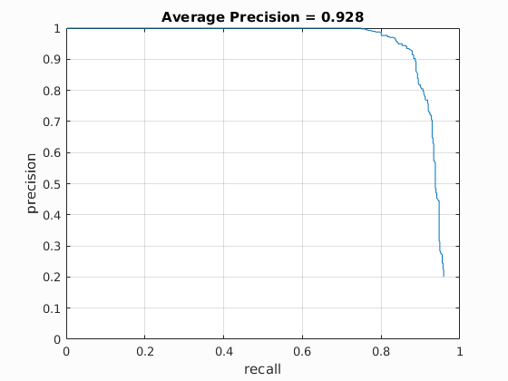
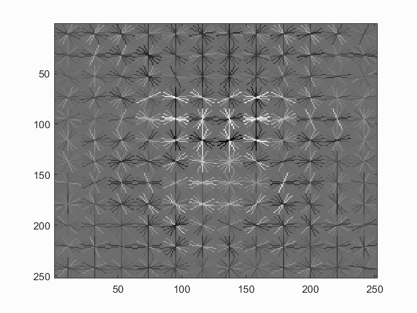
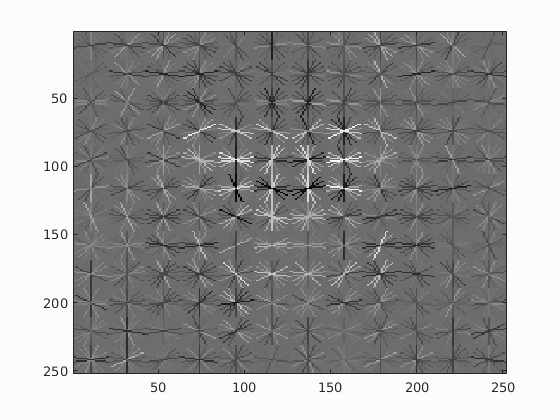
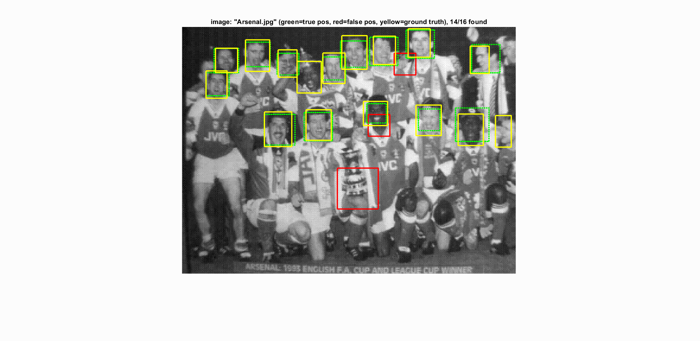
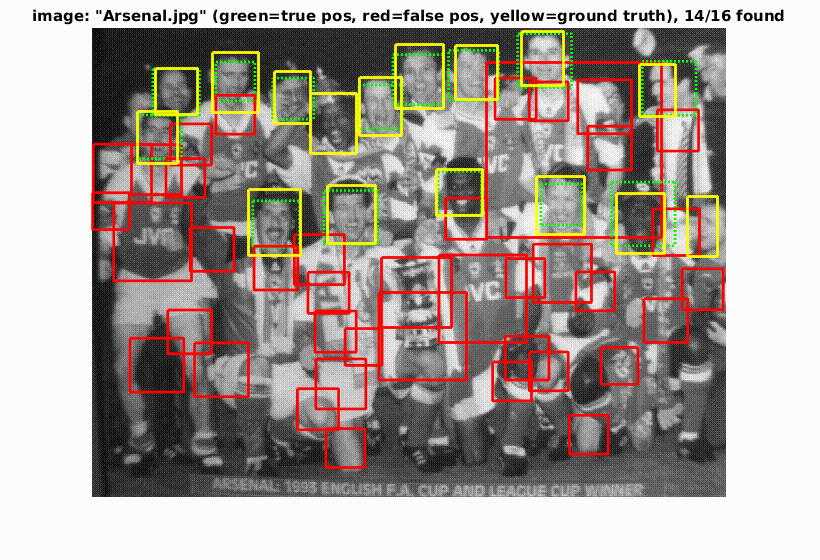

1 - Technical Details and Implementation Decisions
1.1 - Baseline Algorithm
To create an SVM model for face detection, it needs to be trained on face and non-face data as the positive and negative
features respectively. The provided dataset provides two data groups, which are faces and non-faces. The faces are all
cropped 36x36 images, while the non-faces have different dimensions.
To extract positive features, the HoG of faces are extracted. As for negative features, a random 36*36 sample of each
non-face is taken, which is then converted to its HoG.
With the positive and negative features extracted, they are then used to train the SVM model. After training, the SVM
can be used to detect faces in an image.
To detect faces of various sizes in an image, the image is first scaled with manually defined factors. HoG features are
then extracted from each scaled image. Using a sliding window approach, the HoG feature space is traversed with predefined
stride, where the feature subspace is fed into the trained SVM to obtain a face confidence score.
At the same time, the bounding boxes traversed in the HoG features are translated into image coordinates, this is done
by first multiplying the HoG window coordinates with cell_size to obtain scaled image pixels, and then divided by the
scale factor to obtain the coordinates from the original image.
When sliding window is complete, the bounding boxes are filtered, where only bounding boxes with face confidence score
of over a threshold (0.9) is kept. All filtered bounding boxes are then passed to the non-max supression to remove overlapping
regions. The remaining bounding boxes are the multi-scale face detection results.
1.2 - Extra Features
1.2.1 - Hard Negative Mining
Implementation of hard negative mining is done by modifying the run_detector function. Instead of finding faces from images, hard negative mining tries to find false positives from images that do not contain any faces.To mine hard negatives, each image that does not contain any faces is fed into a process similar to run_detector, i.e. scaling, sliding window, SVM prediction and confidence threshold filtering. However, rather than returning the image bounding boxes, hard negative mining returns the HoG features with confidence score higher than a threshold (0.8). These are essentially false positives since we know they are not faces, and are therefore returned as additional negative training samples.
Therefore, after running hard negative mining, another SVM is trained with the original dataset plus the additional mined hard negatives.
1.2.2 - Data Augmentation
Common approaches to data augmentation includes image flipping, rotation, scaling, etc. However, HoG features has requirement of upright face orientation, which renders image rotation ineffective in this domain. Nevertheless, it is found that contrast adjustments may be helpful in obtaining clearer face contours, and hence improve HoG feature extraction and the resulting face detection performance.Therefore, considering the fact that our HoG window is of fixed size, and face is mirror-invariant, i.e. flipped faces should still be easily recognized as faces, we carried out data augmentation by horizontal image flipping and contrast adjustment. The resulting positive training sample size is hence four times the original amount.
1.3 - Implementation Decisions
1.3.1 - run_detector.m Implementation
Originally, as a more comprehensible and simpler implementation, vector appending was used instead of initializing empty
matrices for storing bounding boxes, results and image ids. However, it was soon noticed that vector appending is extremely
inefficient compared to matrix initialization.
Upon refactoring the implementation to matrix initialization, the running time of training and testing has dramatically shortened.
1.3.2 - Image and HoG Feature Coordinate Translation
The image pixel space and the HoG feature space has different dimensions. Therefore, when carrying out sliding window on the HoG space, the corresponding image coordinates must also be computed in order to keep track of the image bounding boxes.In the sliding window iterations, steps are expressed in terms of HoG feature dimensions, this is because comparing to translating from image coordinates to HoG coordinates during iterations, the inverse has higher readibility and simpler structure, where less functions are used inside the loops, e.g. floor(), size(), etc.
1.3.3 - Contrast adjustment in data augmentation
Contrast can be adjusted in many different ways, such as scaling by a constant. Yet, to most effectly emphasize edges and contours in an image, it is believed that spreading the image color space across the entire 0-255 domain would be most effective. Therefore, instead of defining a scale factor for image contrasts, each training face image color space is redistributed across the entire black-and-white color space.2 - Performance
For all evaluations, unless otherwise specified, the parameters are:| File | Function/Variable | Parameter and Value |
|---|---|---|
proj4.m
|
Variable
|
feature_params.template_size = 36feature_params.hog_cell_size = 3num_negative_examples = 20000
|
vl_svmtrain()
|
lambda = 0.0001
|
|
run_detector.m
|
Variable
|
scale = [0.01, 0.02, 0.05:0.05:1] |
find()
|
scores > 0.8
|
|
run_mine_detector.m
|
Variable
|
scale = [0.01, 0.02, 0.05:0.05:1] |
find()
|
scores > 0.8
|
2.1 - Average Precision
| Baseline Algorithm |

|
| Hard Negative Mining |  |
| Data Augmentation |  |
2.2 - HoG Visualizations
| Baseline Algorithm |  |
| Hard Negative Mining |  |
| Data Augmentation |
2.3 - Sample CMU+MIT Output
| Baseline Algorithm |  |
| Hard Negative Mining | |
| Data Augmentation |  |
2.4 - Extra Scenes Output
| Baseline Algorithm | |
| Hard Negative Mining | |
| Data Augmentation |